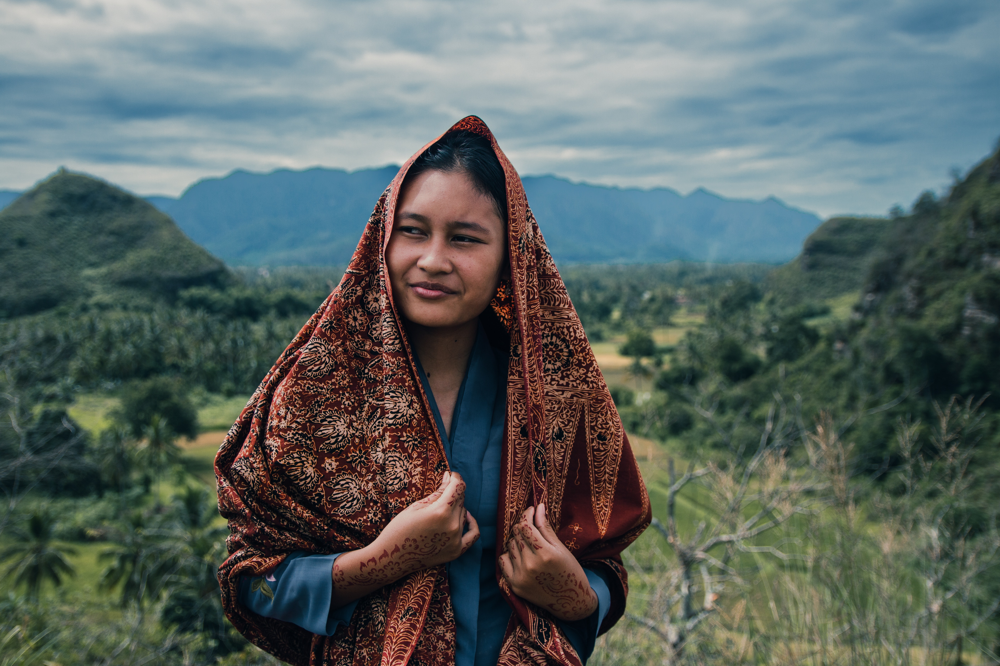

Human Of Indonesia
FIND YOUR INSPIRING STORIES
Sebelumnya sudah beberapa waktu sejak saya berusia tujuh belas tahun. Namun, meskipun ada tugas sekolah yang harus dikerjakan, saya menganggap ini adalah waktu yang indah dan menyenangkan. Saya memiliki keleluasaan untuk pergi ke mana saja tanpa terlalu banyak tanggung jawab. Saya bisa keluar rumah dengan hewan peliharaan saya, seperti anjing, dan berjalan-jalan tanpa terlalu banyak khawatir. Sayangnya, saya harus menyelesaikan esai 650 kata untuk aplikasi kuliah saya. Hal ini cukup sulit untuk menggambarkan diri sendiri dalam 650 kata, dan meskipun saya masih belum benar-benar tahu siapa diri saya, namun saya mulai merasa nyaman dengan hal tersebut karena itu berarti orang lain juga tidak dapat menentukan saya. Saat melihat orang-orang yang saya kagumi yang lebih tua, saya cenderung membedakan mereka berdasarkan karier dan prestasi mereka. Saya pikir hal tersebut terkadang merupakan cara terbaik untuk memahami mereka karena saya belum memiliki pengalaman sebagai orang yang lebih tua. Begitu pula saat saya melihat diri saya, saya juga merasa bingung dan belum benar-benar memahami siapa diri saya sebenarnya. Namun, saat berusia tujuh belas tahun, kita belum melakukan banyak hal dan masih memiliki banyak hal yang harus ditemukan dan dipelajari. Hal tersebut memiliki kebebasan tersendiri karena tidak banyak hal yang dapat menentukan kita selain saat itu. Kita masih memiliki waktu untuk menentukan siapa diri kita, memilih karier dan mengejar impian kita. Oleh karena itu, jangan ragu untuk mengejar hal-hal yang ingin dicapai dan jangan takut untuk mengejar kesuksesan. Jangan biarkan orang lain menentukan diri kita, karena dalam akhirnya, kita adalah pemilik dari masa depan kita sendiri.
John Doe Story

John Doe lahir pada 1 Januari 2005 di sebuah kota kecil di Indonesia. Saat kecil, dia anak yang aktif dan penasaran yang sangat suka bermain olahraga dan menjelajahi alam bebas. Dia sangat memcelajui sekolah dan memiliki passion untuk belajar, terutama dalam bidang sains dan matematika. Pada masa remajanya, John menemukan bakatnya dalam pemrograman dan mulai mengajari dirinya sendiri cara memrogram.Dia segera tertarik untuk membuat situs web dan aplikasi sendiri, dan segera menemukan dirinya membuat proyek untuk teman dan keluarganya. Saat masuk sekolah menengah, John sudah membuat beberapa aplikasi yang sukses yang digunakan oleh ribuan orang di seluruh dunia.
Dia tetap fokus pada studinya dan menjadi siswa terbaik di kelasnya. Dia juga aktif dalam beberapa kegiatan ekstrakurikuler, termasuk klub robotik dan tim debat. Kerja keras dan tekad John terbayar sudah saat dia diterima di beberapa universitas prestisius, termasuk Harvard dan Stanford. Dia akhirnya memilih untuk mengikuti Harvard, di mana dia terus mengejar passionnya dalam pemrograman dan entrepreneurship. ebagai mahasiswa, John menjadi co-founder sebuah start-up yang berfokus pada pengembangan teknologi terbaru untuk industri kesehatan. Perusahaan tersebut cepat mendapatkan traction dan mengumpulkan jutaan dolar dalam pendanaan. Saat ini, John dianggap sebagai salah satu entrepreneur muda yang paling berbakat di dunia,
dan perusahaannya membuat dampak yang signifikan dalam industri kesehatan. Meskipun sukses, John tetap rendah hati dan bersahaja. Dia terus dikendalikan oleh passionnya dalam teknologi dan keinginannya untuk membuat perbedaan di dunia. Dia adalah inspirasi bagi remaja di seluruh dunia, dan bukti kekuatan kerja keras dan tekad.
Sarah Smith Journey
Perkenalkan Sarah Smith, pemilik bangga Sarah's Crafts and More, sebuah toko satu atap untuk semua kebutuhan crafting Anda. Sarah lahir dan dibesarkan di sebuah kota kecil di pedesaan di mana ia belajar menghargai hal-hal sederhana dalam hidup, termasuk kebahagiaan dalam crafting. Sejak usia muda, ia tertarik dengan cara ibunya dan neneknya bisa mengubah sepotong kain menjadi sesuatu yang indah dan berguna. Passion Sarah untuk crafting terus bertumbuh saat ia semakin tua. Di sekolah menengah, ia mengambil setiap kelas seni dan desain yang tersedia dan menemukan dirinya berprestasi dalam mereka. Setelah lulus, ia mendaftar di sebuah perguruan tinggi lokal dan belajar seni halus, di mana ia mengasah keterampilannya dalam berbagai bentuk crafting. Setelah perguruan tinggi, Sarah bekerja sebagai desainer dan artist freelance, menciptakan bagian kustom untuk pelanggan. Namun, ia selalu bermimpi memiliki toko sendiri, di mana ia bisa berbagi cintanya terhadap crafting dengan orang lain. Pada usia awal 30-an, ia akhirnya membuat mimpinya menjadi kenyataan dengan membuka Sarah's Crafts and More. Sarah's Crafts and More segera menjadi favorit lokal, menarik pemahat dari seluruh daerah. Personalitas ramah Sarah dan pengetahuan luasnya tentang crafting membuatnya figura yang dicintai di masyarakat. Dia juga membuat poin untuk menawarkan kelas dan workshop untuk membantu orang lain mempelajari keterampilan yang ia asah selama bertahun-tahun. Seiring berjalannya waktu, Sarah's Crafts and More telah berkembang, memperluas penawaran mereka untuk meliputi berbagai macam perlengkapan crafting, pola, dan kain. Sarah juga menambahkan sebuah cafe ke toko, di mana pelanggan bisa duduk dan berbicara dengan teman-teman sambil minum kopi saat mereka bekerja pada proyek mereka.Saat ini, Sarah masih memiliki semangat yang sama dalam membuat kerajinan tangan seperti saat dia masih kecil. Dia terus bekerja di toko setiap hari, membantu pelanggan menemukan perlengkapan yang mereka butuhkan untuk mewujudkan proyek mereka. Para pelanggannya sudah seperti keluarga baginya, dan ia bangga dengan rasa kebersamaan yang telah ia ciptakan melalui tokonya. Sarah adalah bukti nyata dari kekuatan mengikuti impian Anda, tidak peduli seberapa besar atau kecilnya impian tersebut. Kecintaannya pada kerajinan tangan dan keinginannya untuk berbagi cinta dengan orang lain telah menginspirasi banyak orang selama bertahun-tahun, dan dia terus melakukannya setiap hari.